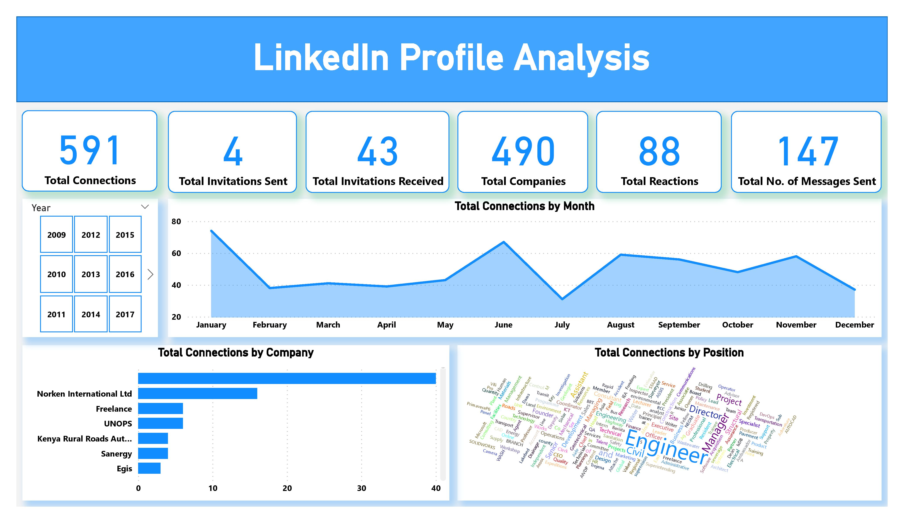

This interactive dashboard provides a comprehensive analysis of customer churn rates in a telecommunications company. It offers valuable insights into the key factors influencing customer churn, allowing stakeholders to understand the underlying patterns and trends in customer behaviour. Through intuitive visualizations and data-driven metrics, the dashboard enables the company to make informed decisions and implement targeted strategies to reduce churn and improve customer retention. By identifying areas of concern and potential opportunities for intervention, this analysis empowers the company to optimize its services, enhance customer satisfaction, and drive long-term business growth.


This interactive PowerBI dashboard provides a comprehensive analysis of store sales data of Corporation Favorita, allowing the management to gain valuable insights and make data-driven decisions. The dashboard includes various visualizations and key performance indicators to highlight sales patterns, store performance, and the impact of promotions, holidays, and external factors.

This interactive dashboard provides a comprehensive analysis of the funding trends in the Indian start-up ecosystem over a four-year period. This visualization offers valuable insights into the funding patterns, sector-wise distribution, geographical impact, trends over time, and correlations between different factors.

This interactive dashboard offers a visual representation of key metrics derived from the analysis of the data from a Linked Profile. It provides insights into various aspects such as the profile's total connections, invitations sent and received, companies connected to, reactions received, messages sent, connections by month, connections by company, and connections by position.